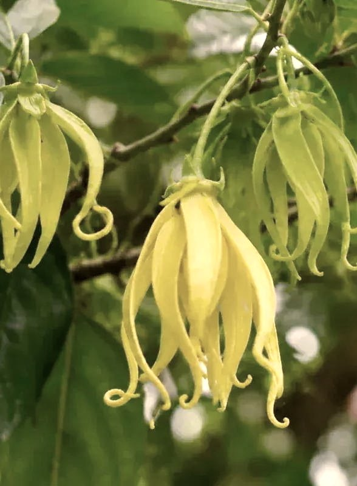
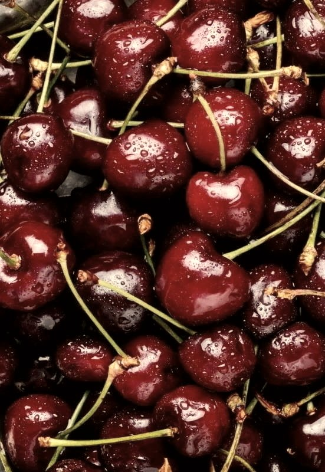
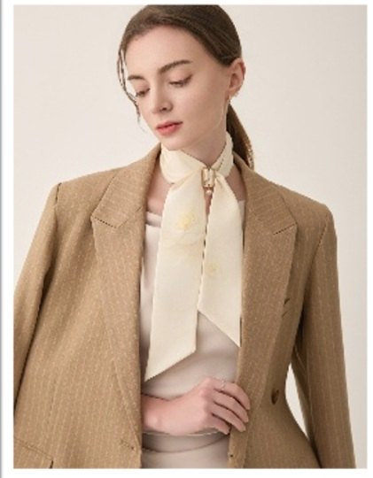
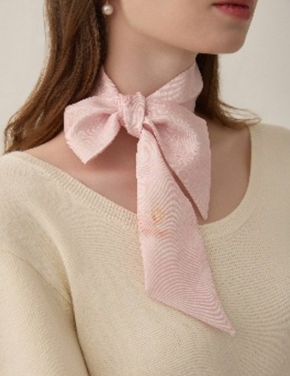
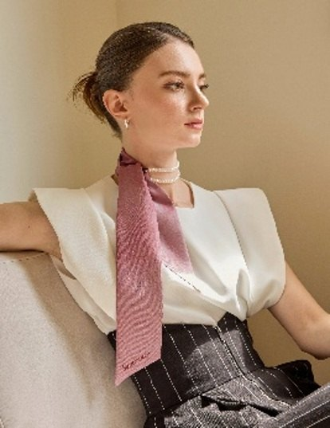
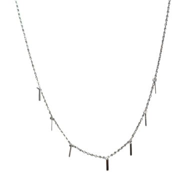
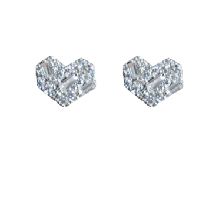
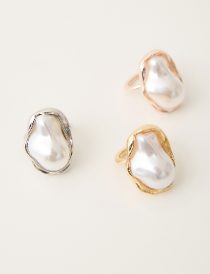

VL · FRG · 001VUCA
依蘭
明細與規格
開場帶著水蜜桃與葡萄柚的果酸，中段讓依蘭與鳶尾鋪出粉質的厚度，尾韻落在麝香與檀木。不甜膩，適合臥室。
- 基劑
- 玉米萃取植物乙醇
- 標準
- 符合 IFRA
Velora
2026 · 韓國選品代理
維羅拉在台灣代理韓國品牌。每一條線都在首爾看過實品才決定代理。批發條件與樣品請用 LINE 洽詢。
FRAGRANCE · FRG
VUCA 的居家擴香，五款香調。香精配方符合 IFRA 標準，基劑採用玉米萃取植物乙醇，並通過七項有害物質檢驗。

VL · FRG · 001VUCA
開場帶著水蜜桃與葡萄柚的果酸，中段讓依蘭與鳶尾鋪出粉質的厚度，尾韻落在麝香與檀木。不甜膩，適合臥室。

VL · FRG · 002VUCA
像剛洗好、還帶著水珠的一籃櫻桃。前調的柑橘讓甜度先站穩，中段椰子與莓果堆疊出果肉的厚實。適合客廳與玄關。
VL · FRG · 003VUCA
像剛曬過太陽的棉被。綠意與西洋梨開場，水蜜桃與蘋果花帶出溫度，香草與雪松把香氣收得柔軟。送禮不容易出錯的一支。
SCARVES · SLK
SAINTMARI 的窄版真絲長巾，十三款印花。邊緣以手工捲縫收口，垂墜時不會翻捲；印花刻意壓低飽和度，不搶衣服的主色。

VL · SLK · 001SAINTMARI
繫在西裝外套的領口。壓低飽和度的印花退到後面，讓外套本身當主角。

VL · SLK · 002SAINTMARI
在領口打成蝴蝶結。寬度夠窄，結不會太大，穿外套時也不會鼓起來。

VL · SLK · 003SAINTMARI
不打結，穿過絲巾扣收起來。少了結的體積，兩端會垂得比較直。
JEWELRY · JWL
SAINTMARI 的 925 純銀首飾與絲巾扣。尺寸刻意做小 —— 是每天戴的東西，不是場合才拿出來的。

VL · JWL · 001SAINTMARI
細鍊配上零星的垂墜，走動時會有很輕的光。鍊長可調五公分，襯衫領內或高領外都能戴。

VL · JWL · 002SAINTMARI
925 純銀為基底，鑲面以密釘方式排列方晶鋯石。尺寸刻意做小，貼著耳垂不晃動，適合每天戴。

VL · JWL · 003SAINTMARI
長巾的收尾。鏤空長方框搭一顆珍珠垂墜，銀、金、玫瑰金三色可依當天的首飾決定。穿過長巾一收，結就乾淨了。
PHONE BAGS · BAG
韓國設計師手機包 —— 是背在身上的包，不是套在機身上的殼。皮革與麂皮絨包身搭可拆背帶，尺寸做到不必翻面就拿得出手機。
編按 —— 本品類目前是示意文案與空版。品名、照片與規格待實際品項提供後替換。
VL · BAG · 001品牌待公布
包身深度剛好放手機加兩張卡，邊緣是折邊車縫而不是切邊，用久了不會起白邊。背帶可拆，拆掉就是手拿包。
VL · BAG · 002品牌待公布
掛在胸前，走路時看得到。麂皮絨有襯裡撐著，不會軟塌貼著手機，背面有兩個卡夾。
VL · BAG · 003品牌待公布
單獨賣，讓同一個包換個樣子。編織織帶配皮革接片，扣具跟包身同一規格，幾秒就換好。
關於 · 代理品牌
維羅拉國際有限公司代理韓國設計品牌進入台灣，承接進口、批發與零售供貨 —— 從單件樣品到整櫃都做。
HOUSE · 01
韓國首爾 · 香氛
主張香氣是空間的一部分而非附加品。香精配方符合 IFRA 標準，並通過七項有害物質檢驗。
HOUSE · 02
韓國首爾 · 絲巾與飾品
做真絲長巾與純銀首飾。設計克制，靠比例與收邊說話 —— 是每天戴的東西，不是場合才拿出來的。
HOUSE · 03
韓國首爾 · 手機包
手機包的設計師品牌將在代理合約簽訂後於此列出。
代理之前
維羅拉決定要不要代理一條線時，不管是哪一家，問的都是這三件事。
真絲就是 100% 真絲，純銀就是 925，牛皮寫得出鞣製方式。供應商說不清楚的，不收。
手工捲縫的長巾不翻捲，扣頭做在同一條線上的手鍊不勾袖口，折邊的皮件不起白邊。便宜貨都是在收邊露餡的。
不是場合才拿出來的東西。一年只用兩次的，讓別家去代理。
洽詢
批發條件、索取樣品，或是想問哪一款香調適合某個空間 —— 傳訊息最快。
加入 LINE 詢問@velora